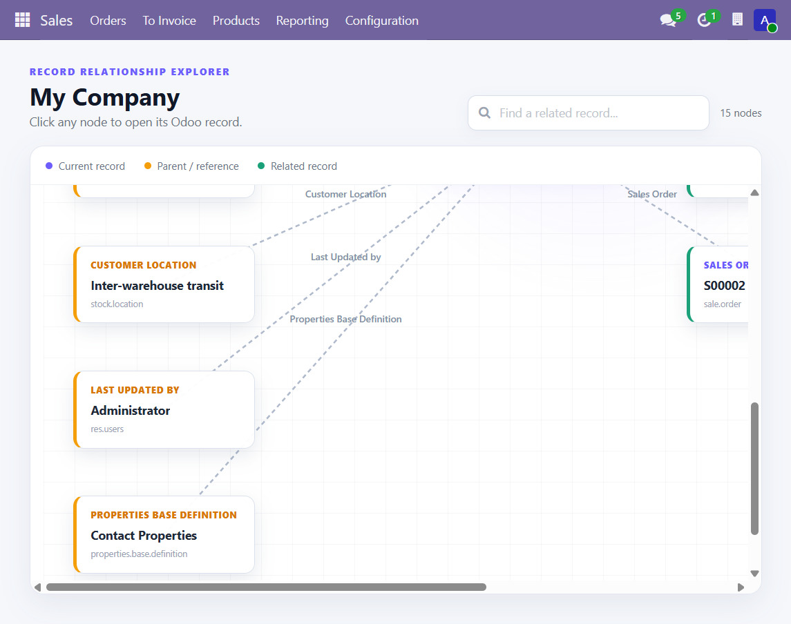

See how your records connect.
Record Relationship Explorer turns the Action menu on any saved Odoo record into a visual, searchable relationship graph. Click a node to open the real Odoo record.
Record Relationship Explorer · v19.0.1.0.1How the module works
There is no separate menu to learn. Start from the record you are already inspecting and open the explorer from the standard Odoo form action menu.
Open a record
Use any saved Sale Order, customer, invoice, product, or other readable record.
Open Action
Choose Explore Relationships from the form's Action menu.
Read the graph
The current record and related records are laid out as an Owl/SVG diagram.
Search or scroll
Filter nodes by name, role, or model. Large graphs scroll vertically and horizontally.
Open a node
Click any node to open its normal Odoo form view in the current window.
Sale Order flow
Sales records receive a curated business-flow graph when the related modules are installed.
What is included
- Any saved form record. The Action menu entry is available on saved records with a valid ID.
- Generic relationship discovery. Readable many2one, one2many, and many2many fields are represented automatically.
- Permission-aware results. The server builds the graph through Odoo's ORM and respects access rights.
- Safe, shallow exploration. The graph avoids chatter/follower noise and limits related records per relationship.
- Fast navigation. Each node opens the corresponding model and record form through Odoo's action service.
Live explorer preview
The screenshot below was captured from the running local Odoo 19 instance. The graph viewport supports both scroll directions when the relationship map is larger than the screen.

Install and use
Place the addon in the Odoo 19 addons path, update the Apps list, and install Record Relationship Explorer.
- Restart Odoo or upgrade the module.
- Open any saved record.
- Use Action → Explore Relationships.
- Press
Ctrl+F5if the browser serves an old asset bundle.